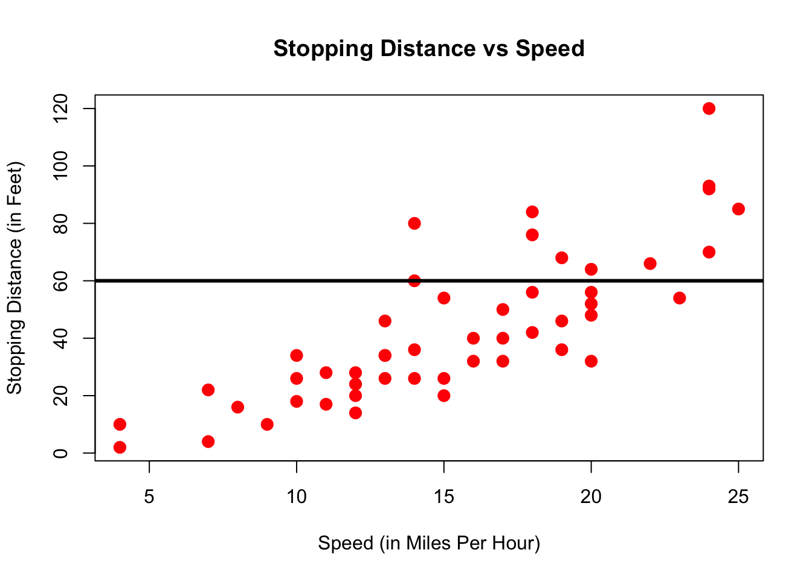

Chapter 3 Working With Data
In this chapter we will first learn some basic concepts that help summarizing data. Then, we will tackle a real-world task and read, clean, and summarize data from the web.
3.1 Summary Statistics
R has built in functions for a large number of summary statistics. For numeric variables, we can summarize data by looking at their center and spread, for example. Make sure to have loaded the ggplot2 library to be able to access the mpg dataset as introduced in section 2.6.7.
library(ggplot2)Central Tendency
Suppose we want to know the mean and median of all the values stored in the data.frame column mpg$cty:
| Measure | R |
Result |
|---|---|---|
| Mean | mean(mpg$cty) |
16.8589744 |
| Median | median(mpg$cty) |
17 |
Spread
How do the values in that column vary? How far spread out are they?
| Measure | R |
Result |
|---|---|---|
| Variance | var(mpg$cty) |
18.1130736 |
| Standard Deviation | sd(mpg$cty) |
4.2559457 |
| IQR | IQR(mpg$cty) |
5 |
| Minimum | min(mpg$cty) |
9 |
| Maximum | max(mpg$cty) |
35 |
| Range | range(mpg$cty) |
9, 35 |
Categorical
For categorical variables, counts and percentages can be used for summary.
table(mpg$drv)##
## 4 f r
## 103 106 25table(mpg$drv) / nrow(mpg)##
## 4 f r
## 0.4401709 0.4529915 0.10683763.2 Plotting
Now that we have some data to work with, and we have learned about the data at the most basic level, our next tasks will be to visualize it. Often, a proper visualization can illuminate features of the data that can inform further analysis.
We will look at four methods of visualizing data by using the basic plot facilities built-in with R:
- Histograms
- Barplots
- Boxplots
- Scatterplots
3.2.1 Histograms
When visualizing a single numerical variable, a histogram is useful. It summarizes the distribution of values in a vector. In R you create one using the hist() function:
hist(mpg$cty)
The histogram function has a number of parameters which can be changed to make our plot look much nicer. Use the ? operator to read the documentation for the hist() to see a full list of these parameters.
hist(mpg$cty,
xlab = "Miles Per Gallon (City)",
main = "Histogram of MPG (City)", # main title
breaks = 12, # how many breaks?
col = "red",
border = "blue")
Importantly, you should always be sure to label your axes and give the plot a title. The argument breaks is specific to hist(). Entering an integer will give a suggestion to R for how many bars to use for the histogram. By default R will attempt to intelligently guess a good number of breaks, but as we can see here, it is sometimes useful to modify this yourself.
3.2.2 Barplots
Somewhat similar to a histogram, a barplot can provide a visual summary of a categorical variable, or a numeric variable with a finite number of values, like a ranking from 1 to 10.
barplot(table(mpg$drv))
barplot(table(mpg$drv),
xlab = "Drivetrain (f = FWD, r = RWD, 4 = 4WD)",
ylab = "Frequency",
main = "Drivetrains",
col = "dodgerblue",
border = "darkorange")
3.2.3 Boxplots
To visualize the relationship between a numerical and categorical variable, once could use a boxplot. In the mpg dataset, the drv variable takes a small, finite number of values. A car can only be front wheel drive, 4 wheel drive, or rear wheel drive.
unique(mpg$drv)## [1] "f" "4" "r"First note that we can use a single boxplot as an alternative to a histogram for visualizing a single numerical variable. To do so in R, we use the boxplot() function. The box shows the interquartile range, the solid line in the middle is the value of the median, the wiskers show 1.5 times the interquartile range, and the dots are outliers.
boxplot(mpg$hwy)
However, more often we will use boxplots to compare a numerical variable for different values of a categorical variable.
boxplot(hwy ~ drv, data = mpg)
Here used the boxplot() command to create side-by-side boxplots. However, since we are now dealing with two variables, the syntax has changed. The R syntax hwy ~ drv, data = mpg reads “Plot the hwy variable against the drv variable using the dataset mpg.” We see the use of a ~ (which specifies a formula) and also a data = argument. This will be a syntax that is common to many functions we will use in this course.
boxplot(hwy ~ drv, data = mpg,
xlab = "Drivetrain (f = FWD, r = RWD, 4 = 4WD)",
ylab = "Miles Per Gallon (Highway)",
main = "MPG (Highway) vs Drivetrain",
pch = 20,
cex = 2,
col = "darkorange",
border = "dodgerblue")Again, boxplot() has a number of additional arguments which have the ability to make our plot more visually appealing.
3.2.4 Scatterplots
Lastly, to visualize the relationship between two numeric variables we will use a scatterplot. This can be done with the plot() function and the ~ syntax we just used with a boxplot. (The function plot() can also be used more generally; see the documentation for details.)
plot(hwy ~ displ, data = mpg)
plot(hwy ~ displ, data = mpg,
xlab = "Engine Displacement (in Liters)",
ylab = "Miles Per Gallon (Highway)",
main = "MPG (Highway) vs Engine Displacement",
pch = 20,
cex = 2,
col = "dodgerblue")
3.2.5 ggplot
All of the above plots could also have been generated using the ggplot function from the already loaded ggplot2 package. Which function you use is up to you, but sometimes a plot is easier to build in base R (like in the boxplot example maybe), sometimes the other way around.
ggplot(data = mpg,mapping = aes(x=displ,y=hwy)) + geom_point()
ggplot is impossible to describe in brief terms, so please look at the package’s website which provides excellent guidance. We will from time to time use ggplot in this book, so try to familiarize yourself with it. Let’s quickly demonstrate how one could customize that first plot:
ggplot(data = mpg, mapping = aes(x=displ,y=hwy)) + # ggplot() makes base plot
geom_point(color="blue",size=2) + # how to show x and y?
scale_y_continuous(name="Miles Per Gallon (Highway)") + # name of y axis
scale_x_continuous(name="Engine Displacement (in Liters)") + # x axis
theme_bw() + # change the background
ggtitle("MPG (Highway) vs Engine Displacement") # add a title
3.3 The tidyverse
Hadley Wickham is the author of R packages ggplot2 and also of dplyr (and also a myriad of others). With ggplot2 he pioneered what he calls the grammar of graphics (hence, gg). Grammar in the sense that there are nouns and verbs and a syntax, i.e. rules of how nouns and verbs are to be put together to construct an understandable sentence. He has extended the grammar idea into various other packages. The tidyverse package is a collection of those packages.
tidy data is data where:
- Each variable is a column
- Each observation is a row
- Each value is a cell
Fair enough, you might say, that is a regular spreadsheet. And you are right! However, data comes to us not tidy most of the times, and we first need to clean, or tidy, it up. Once it’s in tidy format, we can use the tools in the tidyverse with great efficiency to analyse the data and stop worrying about which tool to use.
3.4 Example: Importing Excel Data
The data we will look at is from Eurostat on demography and migration. You should download the data yourself (click on previous link, then drill down to database by themes > Population and social conditions > Demograph and migration > Population change - Demographic balance and crude rates at national level (demo_gind)).
Once downloaded, we can read the data with the function read_excel from the package readxl, again part of the tidyverse suite.
It’s important to know how the data is organized in the spreadsheet. Open the file with Excel to see:
- There is a heading which we don’t need.
- There are 5 rows with info that we don’t need.
- There is one table per variable (total population, males, females, etc)
- Each table has one row for each country, and one column for each year.
- As such, this data is not tidy.
Now we will read the first chunk of data, from the first table: total population:
library(readxl) # load the library
# Suppose I downloaded the file to a directory
# data/ in my current working directory (cwd)
# you can change your cwd with `setwd("your/directory")`
# or in RStudio by clicking Session > Set Working Directory
# total population in raw format
tot_pop_raw = read_excel(path = "data/demo_gind.xls",
sheet="Data", # which sheet
range="A9:K68") # which excel cell range to read
names(tot_pop_raw)[1] <- "Country" # lets rename the first column
tot_pop_raw## # A tibble: 59 x 11
## Country `2008` `2009` `2010` `2011` `2012` `2013` `2014` `2015` `2016`
## <chr> <chr> <chr> <chr> <chr> <chr> <chr> <chr> <chr> <chr>
## 1 Europea… 50029… 50209… 50317… 50296… 50404… 50516… 50701… 50854… 51027…
## 2 Europea… 43872… 44004… 44066… 43994… 44055… 44125… 44266… 44366… 44489…
## 3 Europea… 49598… 49778… 49886… 49867… 49977… 50090… 50276… 50431… 50608…
## 4 Euro ar… 33309… 33447… 33526… 33457… 33528… 33604… 33754… 33856… 33988…
## 5 Euro ar… 32988… 33128… 33212… 33152… 33228… 33307… 33459… 33563… 33699…
## 6 Belgium 10666… 10753… 10839… 11000… 11075… 11137… 11180… 11237… 11311…
## 7 Bulgaria 75180… 74671… 74217… 73694… 73272… 72845… 72456… 72021… 71537…
## 8 Czech R… 10343… 10425… 10462… 10486… 10505… 10516… 10512… 10538… 10553…
## 9 Denmark 54757… 55114… 55347… 55606… 55805… 56026… 56272… 56597… 57072…
## 10 Germany… 82217… 82002… 81802… 80222… 80327… 80523… 80767… 81197… 82175…
## # ... with 49 more rows, and 1 more variable: `2017` <chr>This shows a tibble. This is more informative view of a data.frame (it tells us data type, and how many cols and rows). Notice, in particular, that all columns seem to be of type chr, i.e. characters - a string, not a number! We’ll have to fix that, as this is clearly numeric data.
3.4.1 tidyr
In the previous tibble, each year is a column name (like 2008) instead of all years being in one column year. We really would like to have several rows for each Country, one per year. We want to gather() all years into a new column to tidy this up - and here is how:
- specify which columns are to be gathered: in our case, all years (note that
paste(2008:2017)produces a vector like["2008", "2009", "2010",...]) - say what those columns should be gathered into, i.e. what is the key for those values:
year. - Finally, what is the name of the new resulting column, containing the value from each cell:
counts.
library(tidyr) # for the gather function
tot_pop = gather(tot_pop_raw, paste(2008:2017),key="year", value = "counts")Notice that counts is still a chr. Let’s convert it:
tot_pop$counts = as.integer(tot_pop$counts)## Warning: NAs introduced by coerciontot_pop## # A tibble: 590 x 3
## Country year counts
## <chr> <chr> <int>
## 1 European Union (current composition) 2008 500297033
## 2 European Union (without United Kingdom) 2008 438725386
## 3 European Union (before the accession of Croatia) 2008 495985066
## 4 Euro area (19 countries) 2008 333096775
## 5 Euro area (18 countries) 2008 329884170
## 6 Belgium 2008 10666866
## 7 Bulgaria 2008 7518002
## 8 Czech Republic 2008 10343422
## 9 Denmark 2008 5475791
## 10 Germany (until 1990 former territory of the FRG) 2008 82217837
## # ... with 580 more rowsNow you can see that column counts is indeed a int, i.e. an integer number, and we are fine.
3.4.2 dplyr
The transform chapter of Hadley Wickham’s book is a great place to read up more on using
dplyr.
With dplyr you can do the following operations on data.frames and tibbles:
- Choose observations based on a certain value:
filter() - Reorder rows:
arrange() - Select variables by name:
select() - Create new variables out of existing ones:
mutate() - Summarise variables:
summarise()
All of those verbs can be used with group_by(), where we apply the respective operation on a group of the dataframe/tibble. For example, on our tot_pop tibble we will now
- filter
- mutate
- and plot the resulting values
Now we can immediately select some countries and plot their population over time. We will make use of the piping syntax of dplyr as already mentioned in section 2.6.7.
library(dplyr) # for %>%, filter, mutate, ...
tot_pop %>%
filter(Country %in% c("France","United Kingdom","Italy","Germany")) %>%
mutate(millions = counts / 1e6) %>%
ggplot(mapping = aes(x=year,y=millions,color=Country,group=Country)) + geom_line()
Arrange a tibble
- What are the top/bottom 5 most populated areas?
top5 = tot_pop %>%
arrange(desc(counts)) %>% # arrange in descending order of col `counts`
top_n(5)
bottom5 = tot_pop %>%
arrange(desc(counts)) %>%
top_n(-5)
top5## # A tibble: 5 x 3
## Country year counts
## <chr> <chr> <int>
## 1 European Economic Area (EU28 - current composition, plu… 2017 5.17e8
## 2 European Economic Area (EU28 - current composition, plu… 2016 5.16e8
## 3 European Economic Area (EU28 - current composition, plu… 2015 5.14e8
## 4 European Economic Area (EU27 - before the accession of … 2017 5.13e8
## 5 European Economic Area (EU28 - current composition, plu… 2014 5.12e8bottom5## # A tibble: 5 x 3
## Country year counts
## <chr> <chr> <int>
## 1 San Marino 2015 32789
## 2 San Marino 2014 32520
## 3 San Marino 2008 32054
## 4 San Marino 2011 31863
## 5 San Marino 2009 31269Now this is not exactly what we wanted. It’s always the same country in both top and bottom, because there are multiple years per country. Let’s compute average population over the last 5 years and rank according to that:
topbottom = tot_pop %>%
group_by(Country) %>%
filter(year > 2012) %>%
summarise(mean_count = mean(counts)) %>%
arrange(desc(mean_count))
top5 = topbottom %>% top_n(5)
bottom5 = topbottom %>% top_n(-5)
top5## # A tibble: 5 x 2
## Country mean_count
## <chr> <dbl>
## 1 European Economic Area (EU28 - current composition, plus IS… 514029320
## 2 European Economic Area (EU27 - before the accession of Croa… 509813491.
## 3 European Union (current composition) 508502858.
## 4 European Union (before the accession of Croatia) 504287028.
## 5 European Union (without United Kingdom) 443638309.bottom5## # A tibble: 5 x 2
## Country mean_count
## <chr> <dbl>
## 1 Luxembourg 563319.
## 2 Malta 440467.
## 3 Iceland 329501.
## 4 Liechtenstein 37353
## 5 San Marino 33014.That’s better!
Look for NAs in a tibble
Sometimes data is missing, and R represents it with the special value NA (not available). It is good to know where in our dataset we are going to encounter any missing values, so the task here is: let’s produce a table that has three columns:
- the names of countries with missing data
- how many years of data are missing for each of those
- and the actual years that are missing
missings = tot_pop %>%
filter(is.na(counts)) %>% # is.na(x) returns TRUE if x is NA
group_by(Country) %>%
summarise(n_missing = n(),years = paste(year,collapse = ", "))
knitr:::kable(missings)| Country | n_missing | years |
|---|---|---|
| Albania | 2 | 2010, 2012 |
| Andorra | 2 | 2014, 2015 |
| Armenia | 1 | 2014 |
| France (metropolitan) | 4 | 2014, 2015, 2016, 2017 |
| Georgia | 1 | 2013 |
| Monaco | 7 | 2008, 2009, 2010, 2011, 2012, 2013, 2014 |
| Russia | 4 | 2013, 2015, 2016, 2017 |
| San Marino | 1 | 2010 |
Notice that I used the function kable from the knitr package to produce a nicely looking table here.
- plot different vars
- make proportions and plot
- make growth rates and plot
- plot different vars by country